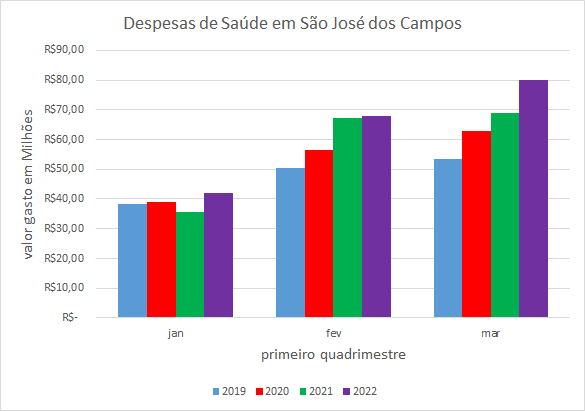
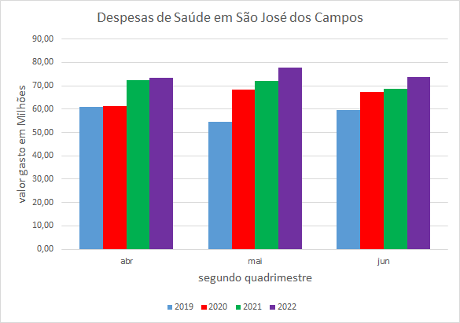
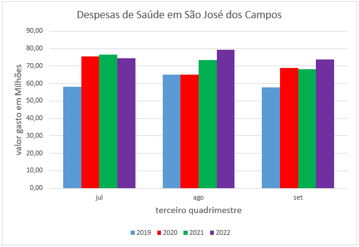
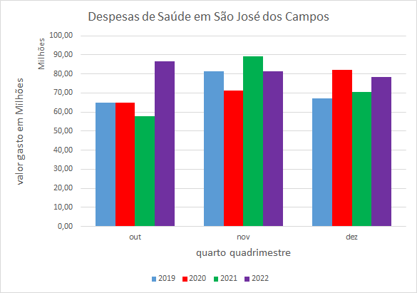

{% extends 'base.html' %}

{% block title %}
    <title>Gráficos - SJC</title>
{% endblock %}

{% block body %}
    <h1>São José Dos Campos- Covid longa</h1>
    <hr>

    <div class="campo">
      <select id="municipio" onchange="window.location.href = this.value;">
        <option selected disabled value="">São José Dos Campos</option>
        <option value="acessosjc">São José Dos Campos</option>
        <option value="acessotaubate">Taubaté</option>
        <option value="acessojacarei">Jacareí</option>
        <option value="acessocaçapava">Caçapava</option>
        <option value="acessoaparecida">Aparecida</option>
      </select>
    </div>

    <div class="campo">
      <select id="municipio" onchange="window.location.href = this.value;">
        <option selected disabled value="">Gastos</option>
        <option value="graficos_consultas_sjc">Consultas</option>
        <option value="graficos_medicamentos_sjc">Medicamentos</option>
        <option value="graficos_internacoes_sjc">Internações</option>
        <option value="graficos_gastos_sjc">Gastos</option>
      </select>
    </div><br>
    <div class="alinhar">
      
      
      
      
 
   </div>
    <div class="gf">
      <canvas id="myChart"></canvas>
      <a class="fontes" href="https://servicos.sjc.sp.gov.br/portal_da_transparencia/despesa_funcao.aspx" target="_blank"> Fonte: https://servicos.sjc.sp.gov.br/portal_da_transparencia/despesa_funcao.aspx </a>  
    </div>
    <script src="https://cdn.jsdelivr.net/npm/chart.js"></script>
    <script>
      const ctx = document.getElementById('myChart');

      new Chart(ctx, {
      type: 'bar',
      data: {
          labels: [2019, 2020, 2021, 2022],
          datasets: [
          {% for ordem in gastos %}
          {
          label: "{{ gastos.index(ordem)+1 }}º Maior gasto",
          data: {{ ordem }},
          borderWidth: 1
          },
          {% endfor %}
        ]
      },
      options: {
          responsive: true,
          maintainAspectRatio: false,
          scales: {
          y: {
              beginAtZero: true
          }
          }
      }
      });
  </script>

  <div class="gf">
    <canvas id="myChart1"></canvas>
  </div>
  
<div class="gf">
  <canvas id="myChart2"></canvas>
</div>

<div class="gf">
  <canvas id="myChart3"></canvas>
</div>


<script src="https://cdn.jsdelivr.net/npm/chart.js"></script>
<script src="../../static/js/graficos_gastos/graficos_gastos_sjc.js"></script>
{% endblock %}

{% block footer %}
<footer class="footer-relative">Copyright © 2023 Syntax Squad | Todos os direitos reservados</footer>
{% endblock %}
